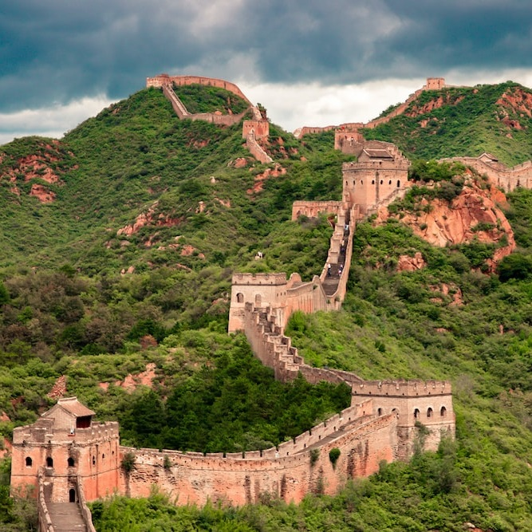
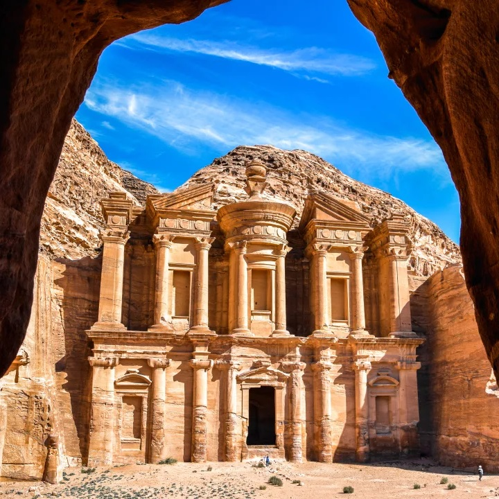
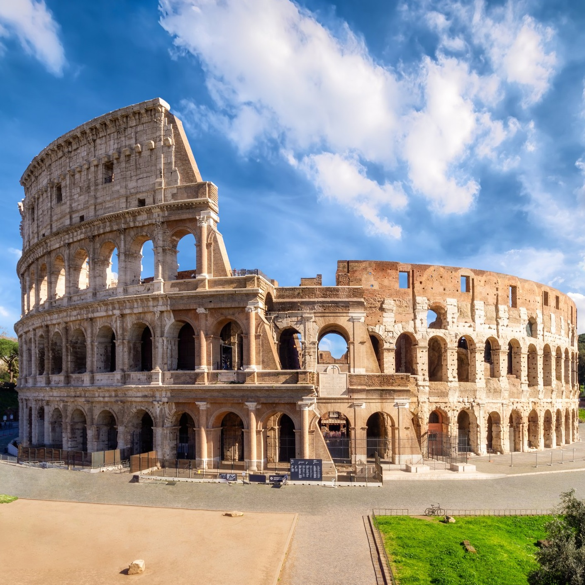
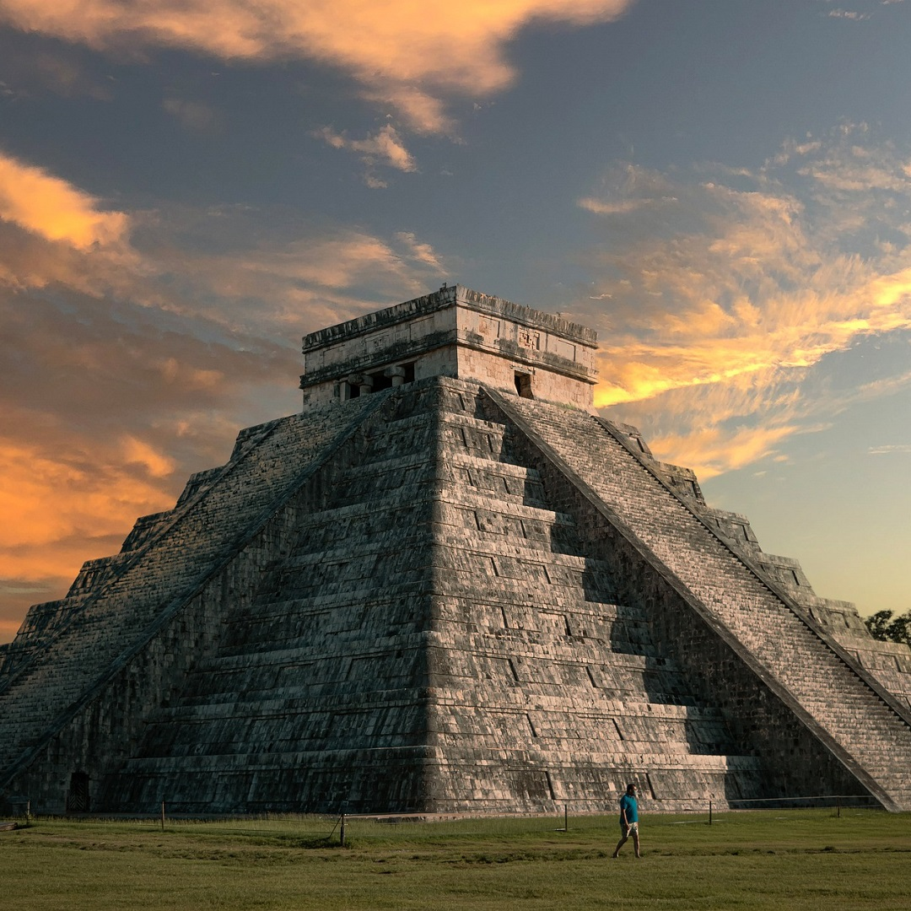
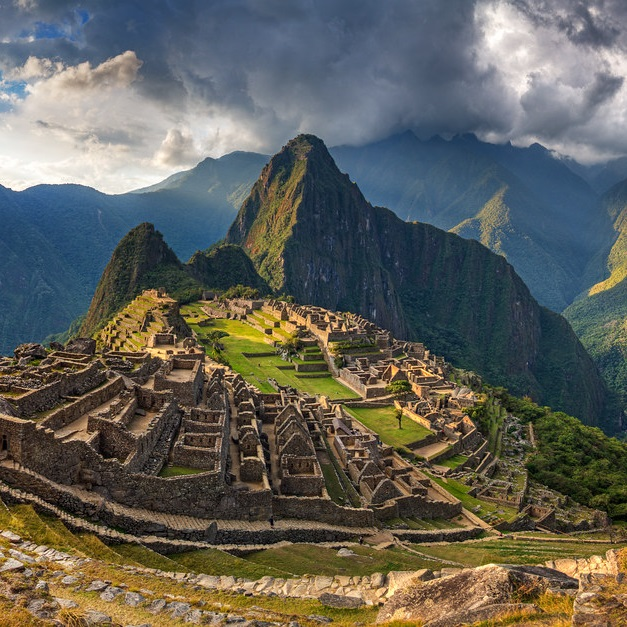
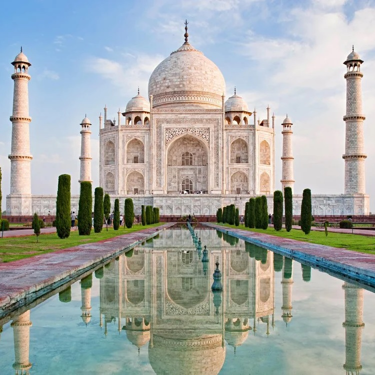
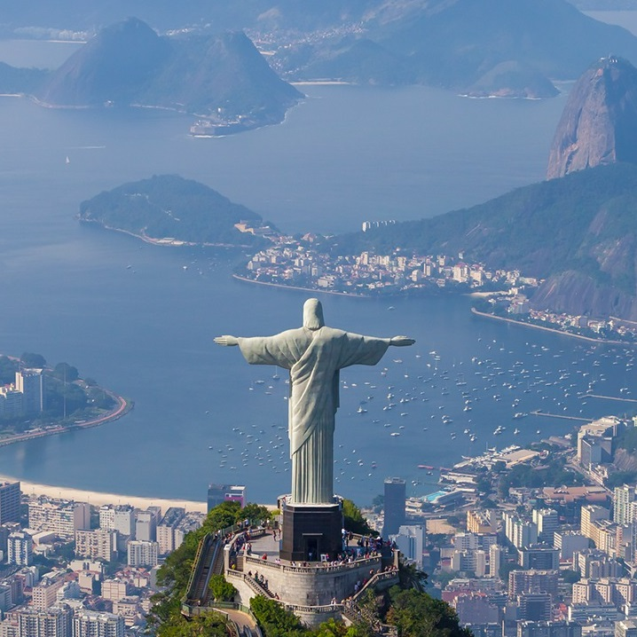

New 7 Wonders of the World
| Wonder |
Image |
Location |
Instance Of |
Coordinates |
Year |
| Great wall of China |
 |
China |
Fortification |
40.4319° N, 116.5704° E |
700 BC |
| Petra |
 |
Ma'an, Jordan |
Archaeological city |
30.3285° N, 35.4444° E |
312 BC |
| The Colosseum |
 |
Rome, Italy |
Amphitheatre |
41.8902° N, 12.4922° E |
80 AD |
| Chichén Itzá |
 |
Yucatán, Mexico |
Pyramid |
20.6843° N, 88.5678° W |
600 AD |
| Machu Picchu |
 |
Cusco Region, Peru |
Inca Citadel |
13.2263° S, 72.4973° W |
1450 AD |
| Taj Mahal |
 |
Agra, India |
Marble Mausoleum |
27.1751° N, 78.0421° E |
1643 AD |
| Christ, "The Redeemer" |
 |
Rio de Janeiro, Brazil |
Art Deco Statue |
22.9519° S, 43.2105° W |
1931 AD |